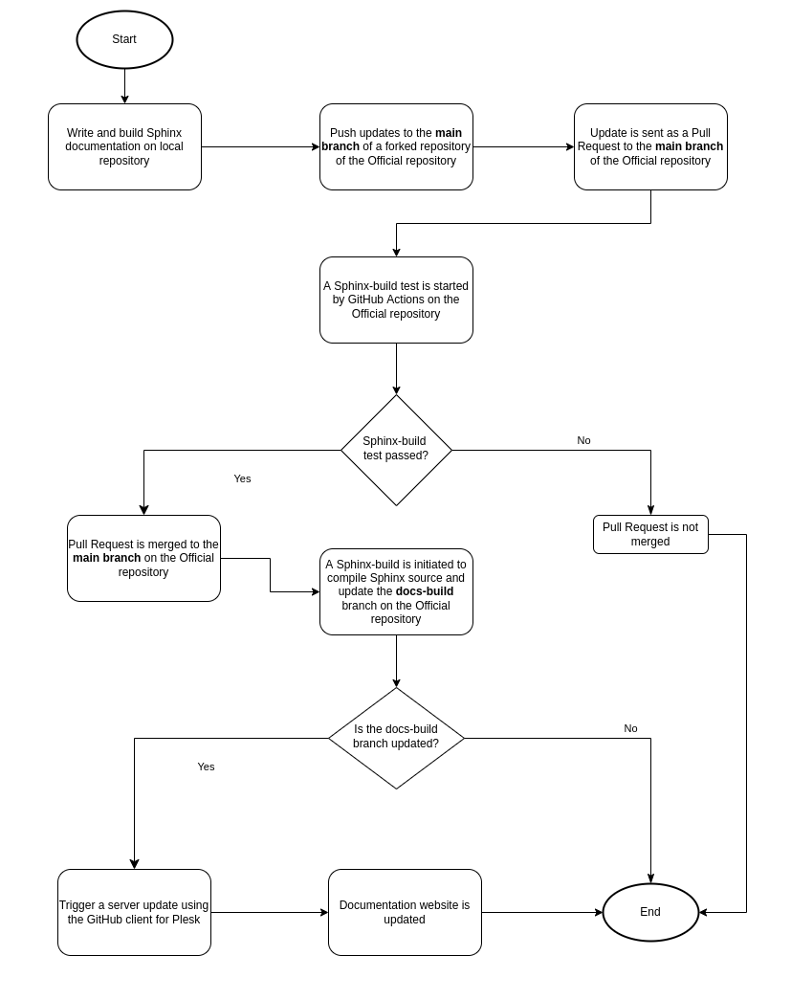
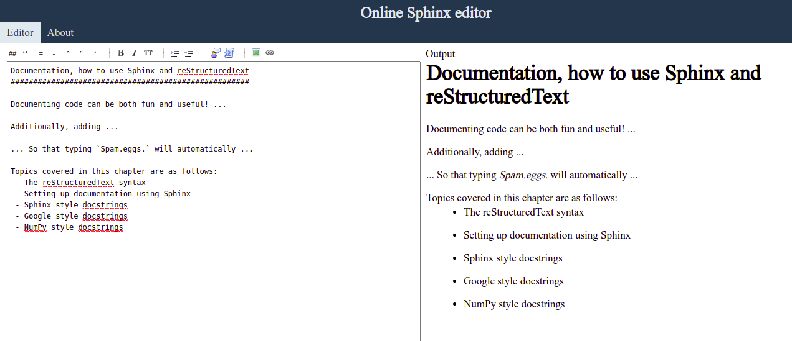
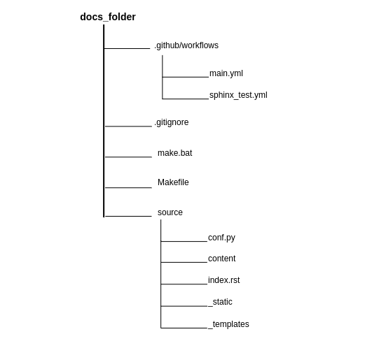
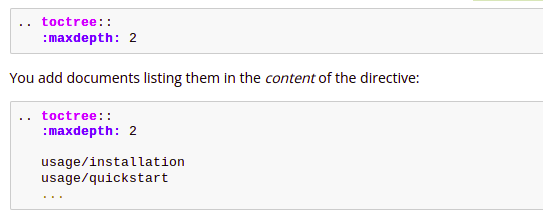

The Sphinx documentation build process
The document explains how to set up a robust documentation system with information about how Sphinx documentation works, using GitHub and GitHub Actions, compilation and testing of Sphinx documentation on GitHub, and automatic server update for the documentation system.
Topics covered in this document are:
-
A brief explanation of the documentation build process
-
Setting up documentation using Sphinx
-
Using GitHub and GitHub Actions
-
Updating documentation website automatically on Plesk server
Pre-requisites
To implement this documentation build process, you must have:
-
Python 3.5+ installed
-
Knowledge about writing and building Sphinx documentation.
-
A GitHub account and a repository for the documentation source files.
-
A hosting platform like Plesk that has a GitHub client.
Brief explanation of the Sphinx documentation build process
The documentation build process is a simple process which achieves its aim of ensuring less human involvement in building, testing, maintaining and updating the documentation website.
The tools used in the documentation build process are Python, Sphinx, RST, GitHub and GitHub Actions, and Plesk.
The documentation build process is:
-
The technical writer writes documentation source files on his local machine using his favourite editor.
-
The technical writer sends the documentation source files to the main branch of a forked remote repository.
-
We test the updated source files on the forked repository before sending a pull request (PR) to the main branch on the official repository.
-
On the official repository, we test the PR changes and if successful, we merge the pull request changes into the main branch, else, we ask the one who sent the pull request to revisit the source files.
-
When we merge a PR change into the main branch of the official repository, we initiate a Sphinx build process to compile the source files, which generates HTML documents.
-
We move the HTML documents to the docs-build branch on the official repository.
-
Whenever the docs-build branch is updated, the GitHub client triggers an event to update the Plesk server with the latest contents from the doc-build branch.
-
We update the documentation website successfully.

Fig. 1: Illustration of the Sphinx Documentation build process
Setting up documentation using Sphinx
What is Sphinx?
Sphinx is a tool that makes it easy to create intelligent and beautiful documentation in different output formats such as HTML, LaTeX (for printable PDF versions), EPUB, Tex info, manual pages, and plain text. Also, it has features like an easy definition of a document tree, automatic highlighting of codes, automatic testing of code snippets, and dozens of extensions contributed by the Sphinx community.
Sphinx uses reStructuredText as its markup language, and many of its strengths come from the power and straightforwardness of reStructuredText and its parsing and translating suite, the Docutils.
The reStructuredText syntax
The reStructuredText format (also known as RST, ReST, or reST) is a simple language that implements enough markup to be usable and can be easily read as plain text. These two features make it versatile enough to generate pretty and useful documentation.
The greatest thing about reStructuredText is that even without knowing anything about the standard, you can easily write documentation in this style. However, more advanced techniques, such as images and links, do require some explanation.
Within the Python community, reStructuredText has been the standard documentation language for over 10 years, making it the recommended solution. The figure below shows an example of the reStructuredText syntax.

Fig. 2: Illustration of a reStructuredText (left) and the output (right)
Writing and building the documentation source using Sphinx on the local machine
To write and build the documentation website, you need to set up a Python virtual environment and install Sphinx.
With Sphinx installed, you can run the sphinx-quickstart command to
set up a source directory and create a default conf.py file with the
most useful configuration values from a few questions it asks you.
The conf.py contains the Sphinx configuration file, where you can configure all aspects of how Sphinx reads your sources and builds your documentation.

Fig. 3: Source directory for a Sphinx documentation
Sphinx reads its contents from files with the extension ".rst". These ".rst" files contain the structure of the documentation and the text to be displayed on the documentation website.
After you have set up the source directory for the documentation, the next thing is to define the document structure.
Let's assume you have run the sphinx-quickstart command. It created a
source directory with conf.py and a root document, index.rst.
The main function of the root document is to serve as a welcome page and
to contain the root of the "table of contents tree" (or toctree). This
is one of the main things that Sphinx adds to reStructuredText, a way to
connect multiple files to a single hierarchy of documents.

Fig. 4: The toctree reStructuredText directive
After defining the document structure, you need to create ".rst files" in the "content" directory and write your information in them using the reStructuredText markup language. You can then link the created files in the index.rst file. See reStructuredText for a more in-depth introduction to reStructuredText, including markup added by Sphinx.
Now that you have added some files and content, let's make a first build
of the docs. A build is started with the sphinx-build command:
sphinx-build -b html sourcedir builddir
where sourcedir is the source directory, and builddir is the directory in which you want to place the built documentation. The -b option selects a builder; in this example, Sphinx will build HTML files. You can then view the HTML files in your browser, then you can tweak the source files to meet your needs.
Using GitHub and GitHub Actions
After writing and building the documentation source on the local machine, you need to transfer the source files to your remote repository on GitHub.
You then need to test and build the documentation on the remote repository. This is where GitHub Actions is used.
What is GitHub Actions?
GitHub Actions is a CI/CD platform that allows you to automate your build, test, and deployment pipeline using workflows. When using GitHub Actions, GitHub will provide you with Linux, Windows, and macOS virtual machines to run your workflows.
You can configure a GitHub Actions workflow to be triggered when an event, such as a push, occurs in your repository.
Configuring a GitHub Actions Workflow
What is a workflow?
A workflow is a configurable and automated process that runs one or more jobs. Each job runs inside its virtual machine runner, or a container, and has one or more steps that either run a script you defined or run an action from the GitHub Marketplace.
Workflows are defined by a YAML file checked in your repository and are triggered either manually or by an event in the repository. Below is an example of a GitHub Actions workflow.

For us to build and test the documentation, we will configure two (2) GitHub Actions workflows and store them under the ".github/workflows" directory. The two (2) GitHub Actions workflows are sphinx_test.yml and main.yml.
The sphinx_test.yml workflow runs a CI test to ensure the documentation builds, and this workflow is triggered by pull request events on the main branch of the official repository.
The main.yml workflow, on the other hand, compiles the Sphinx sources in the official repository's main branch and updates the docs-build branch with the HTML files. This workflow is triggered by push events on the main branch of the official repository.
Testing and Publishing Documentation Changes
On the Official repository, an update to the repository's main branch must be tested first. We test by running the "Pull Request Docs Check" (i.e., sphinx_test.yml) workflow either manually or by triggering a pull request event.
If the test is successful, then the documentation project maintainer will merge the pull request changes after reviewing the pull request. This is to ensure that we review the changes in the pull request before merging into the official repository.
When the documentation project maintainer merges the pull request changes to the repository's main branch, GitHub triggers the "Compile Sphinx source and update docs-build branch" (i.e., main.yml) workflow automatically.
If the build is successful, it sends the HTML files to the docs-build branch.
Updating documentation website automatically on Plesk server
The docs-build branch on the Official repository integrates with the GitHub client for Plesk. On each push change made to the docs-build branch, the Plesk GitHub client integration ensures that the Plesk server is up-to-date with the files from the docs-build branch on the Official repository.
We update the documentation website when we update the Plesk server.
Conclusion
To conclude, Sphinx enables us to build well-structured and well-designed documentation which is easy to maintain and update. And with the help of GitHub and GitHub Actions, we can create a CI/CD pipeline which enables us to automatically test and build our documentation before publishing it to our users.